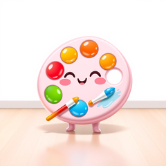

Terminal color profile detection + ANSI conversion
Detect the terminal's color capability (ANSI / ANSI256 / TrueColor), convert between formats, and write StandardColors compatible with the Charm ecosystem.
composer require candycore/candy-paletteuse CandyCore\Palette\Palette;
$profile = Palette::detect();
echo $profile->type(); // "truecolor" | "256" | "ansi"
$hex = Palette::fromHex('#ff6b6b')->toProfile($profile)->ansi();
$rgb = Palette::fromHex('#ff6b6b')->rgb(); // [255, 107, 107]